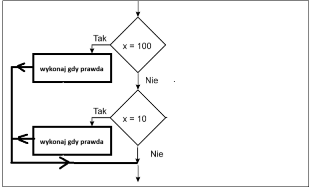
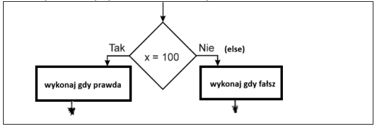

- Instrukcja wyboru -> składania teoretyczna.
- Instrukcja wyboru -> schemat blokowy.

- Instrukcja alternatywy -> składania teoretyczna.
- Instrukcja alternatywy -> schemat blokowy.

- Operatory porównania.
- Uwaga do operatorów porównania.
Należy odróżnić == ( dwa razy ) od = (jeden raz)
== ( dwa razy ) -> instrukcja PORÓWNANIA
= (jeden raz) -> instrukcja PRZYPISANIA np. a=5;
- Operatory logiczne.